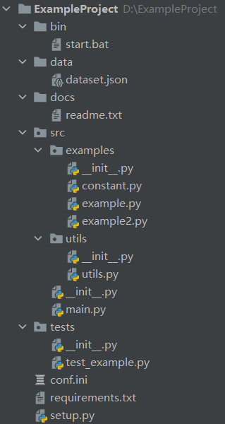

Python 开发语言规范¶
项目结构¶
1.前言 source¶
“结构化”的定义是您关注于怎样使您的项目最好地满足它的对象性，我们需要去考虑如何更好地利用Python的特性来创造简洁、高效的代码。在实践层面，“结构化”意味着通过编写简洁的代码，并且正如文件系统中文件和目录的组织一样， 代码应该使逻辑和依赖清晰。
在一个健康的开发周期中，代码风格，API设计和自动化是非常关键的。同样的，对于工程的架构、仓库的结构也是关键的一部分。
当其他工程师查看或者接手您的工程（仓库）时，他们会看到这些: - 工程的名字 - 工程的描述 - 一系列的文件 只有当他们滚动到目录下方时才会看到您工程（仓库）的README。
如果您的工程（仓库）的目录是一团糟，没有清晰的结构，他们可能要到处寻找才能找到您写的漂亮的文档。
样例：
Sample
├── LICENSE
├── README.md
├── setup.py
├── requirements.txt
├── example
│ └── example.py
│ └── __init__.py
├── docs
│ └── example.doc
└── tests
│ └── test_example.py
1.1 结构是一把钥匙¶
得益于Python提供的导入与管理模块的方式，结构化Python项目变得相对简单。 这里说的简单，指的是结构化过程没有太多约束限制而且模块导入功能容易掌握。 因而您只剩下架构性的工作，包括设计、实现项目各个模块，并整理清他们之间 的交互关系。
容易结构化的项目同样意味着它的结构化容易做得糟糕。糟糕结构的特征包括：
-
多重且混乱的循环依赖关系：例如，Student类中需要Teacher类，而同样的Teacher类需要引入Student类，这就是一直循环依赖。在这种情况下,您得借助一些不怎么靠谱的 小技巧，比如在方法或函数内部使用import语句。
-
隐含耦合：由于Student类与Teacher类会相会影响，各自的改变都可能会引起对方的改变。这样的情况意味着 Teacher类代码中包含了太多关于Student类的假设关联（相反亦是如此）。在这种情况下，我们应该尽量将这两个类的关系进行解耦，例如添加一个课程类或者班级类来将两者联系起来。
-
大量使用全局变量或上下文：大量的使用可以被修改而且是能被不同引用或者对象修改的全局变量，而不是通过准确的传递
class，id这样确切的变量，那出现bug的时候您就需要彻底检查全局变量的**所有入口**，来理解为啥会发生这样的情况：两个老师为啥会在同一个班级教同一门课。 -
面条式代码 (Spaghetti code) ：多页嵌套的if语句与for循环，包含大量复制-粘贴 的过程代码，且没有合适的分割——这样的代码被称为面条式代码。Python中有意思 的缩进排版(最具争议的特性之一)使面条式代码很难维持，尤其是在纯文本编辑器中，如vim等。
- 混沌代码：这类代码包含上百段相似的逻辑碎片，通常是缺乏 合适结构的类或对象。当你无法清晰定义1个类或者对象时，不知道是应该定义新的类还是继承原有的类、或者是否需要使用方法重载是，也许您已经陷入了混沌代码中。
2. 工程结构 source¶
2.1 简单结构¶
packaging_tutorial
├── LICENSE
├── README.md
├── example_pkg
│ └── __init__.py
│ └── example.py
├── setup.py
└── tests
当有多个同级包时，它们都是扁平的散落在项目根目录。项目根目录下可能还存在其他非包目录，如 data 、 docs 等。如果需要本地引用第三方库，也需要放到根目录，但第三方包并不是项目的子包，而是它的一个引用。这样做会造成职责混乱。如下：
tutorial
├── LICENSE
├── README.md
├── data
| └── user.json
├── docs
│ └── history.md
├── user
│ └── __init__.py
├── views
│ └── __init__.py
├── requests # 这是需要本地打包的第三方包
└── request.py
│ └── __init__.py
├── setup.py
└── tests
在打包上，需要提供 更多的配置 排除不必要的目录，如 docs 或者其他不需要打包仅项目中的东西。
当使用可编辑安装（ pip install -e . ） 时，会将项目根目录中的所有东西安装到环境中，包括一些不需要的。
2. src 结构¶
以下的src结构是社区逐渐遵守的一个标准。虽然社区中有大量老的项目依然采用简单布局，但新项目**推荐**使用 src 结构。
如下面这个示例项目结构：
sampleproject
├── data
│ └── user.json
├── bin
│ └── start.bat
├── docs
│ └── history.md
├── setup.py
├── src
│ ├── requests
│ │ └── __init__.py
│ └── sample
│ ├── __init__.py
│ ├── user
│ │ └── __init__.py
│ └── views
│ └── __init__.py
│ ├── main.py
├── tests
│ ├── __init__.py
│ ├── user
│ │ └── __init__.py
│ └── views
│ └── __init__.py
└── conf.ini
└── settings.py
src 目录，就可以轻松导入项目源代码。通过 pip install -e . 可编辑安装，也只会安装 src 中的包。管理起来更加清晰。

READM¶
这应该是每个项目都应该有的一个文件，目的是能简要描述该项目的信息，让读者快速了解这个项目。 它需要说明以下几个事项: 1.软件定位，软件的基本功能。 2.运行代码的方法: 安装环境、启动命令等。 3.简要的使用说明。 4.代码目录结构说明，更详细点可以说明软件的基本原理。 5.常见问题说明。
在软件开发初期，由于开发过程中以上内容可能不明确或者发生变化，并不是一定要在一开始就将所有信息都补全。但是在项目完结的时候，是需要撰写这样的一个文档的。
requirements.txt¶
这个文件存在的目的是:
方便开发者维护软件的包依赖。将开发过程中新增的包添加进这个列表中，避免在setup.py安装依赖时漏掉软件包。
方便读者明确项目使用了哪些Python包。
这个文件的格式是每一行包含一个包依赖的说明，通常是numpy>=2.20.1这种格式，要求是这个格式能被pip识别，
这样就可以简单的通过pip install -r requirements.txt来把所有Python包依赖都装好了。
当然，你也可以使用pip freeze > requirements.txt命令将你当前的环境所安装的包生成requirements.txt
具体格式说明，请查看官方文档 Requirements
numpy >= 2.20
pandas
docopt == 0.6.1
tqdm >= 3.4, <= 4.5
...
setup¶
一般来说，用setup.py来管理代码的打包、安装、部署问题。业界标准的写法是用Python流行的打包工具setuptools来管理这些事情。
这种方式普遍应用于开源项目中。不过这里的核心思想不是用标准化的工具来解决这些问题，而是说，
一个项目一定要有一个安装部署工具，能快速便捷的在一台新机器上将环境装好、代码部署好和将程序运行起来。
setuptools的文档比较庞大，刚接触的话，可能不太好找到切入点。学习技术的方式就是看他人是怎么用的，
可以参考一下Python的一个Web框架Flask是如何写的: Flask setup.py
from setuptools import setup
# Metadata goes in setup.cfg. These are here for GitHub's dependency graph.
setup(
name="Flask",
install_requires=[
"Werkzeug >= 2.2.2",
"Jinja2 >= 3.0",
"itsdangerous >= 2.0",
"click >= 8.0",
"importlib-metadata >= 3.6.0; python_version < '3.10'",
],
extras_require={
"async": ["asgiref >= 3.2"],
"dotenv": ["python-dotenv"],
},
)
配置文件¶
配置是一个项目的核心驱动，可以在不更改源代码或减少源代码修改的情况下快速调整项目的运行。 使用中心配置驱动项目，能让项目的使用更加灵活，运维工作更轻松。
- 提高了代码的重用性，不再每次都去修改代码内部
- 这意味着其他不太懂你代码内部的人也可以使用你的项目，只用根据需求更改配置即可
- 有利于团队协作
- 有利于安全数据/秘密数据的管理
通过配置文件驱动项目的相关基础配置，如默认data和logs文件夹的所在路径和名称，Web项目相关配置，数据库连接相关配置，第三方库使用配置等。这些不同配置可以分别存放在不同的配置文件中，且文件类型可以多种多样，如.py，.cfg，.ini，.yaml，.json，.txt等。配置文件使用方法参考这个博客。
静态配置 source¶
在很多开源项目或者一些较小的项目中常见对配置文件的使用做法是：
配置文件写在一个或多个python文件中，比如上文的 settings.py。项目中哪个模块用到这个配置文件就直接通过import settings这种形式来在代码中使用配置。这种做法不太好的方面:
- 列表这让单元测试变得困难（因为模块内部依赖了外部配置）
- 另一方面配置文件作为用户控制程序的接口，应当可以由用户自由指定该文件的路径。
- 程序组件可复用性太差，因为这种贯穿所有模块的代码硬编码方式，使得大部分模块都依赖conf.py这个文件。
## Settings
# File config
SOURCE_FILE = '/tmp/foo.txt'
# Log config
LOG_LEVEL = 'DEBUG'
LOG_FORMAT = '%(asctime)s - %(name)s - %(levelname)s - %(message)s'
## main
import config
import logging
logging.basicConfig(
level=settings.LOG_LEVEL,
format=settings.LOG_FORMAT
)
...
动态配置¶
所以，更好的方式是: - 模块的配置都是可以灵活配置的，不受外部配置文件的影响 - 程序的配置也是可以灵活控制的。
Dynaconf（ pypi， 官网）是一个灵活的中心配置管理工具，能够从不同的配置数据存储方式中读取配置，例如.py，.redis，.ini，.json文件，系统环境变量等等。
其具有如下特点：
- 加载多个配置源
- 配置分层
- Django Flask 扩展
- 支持 Redis 和 Vault
在项目中新建配置文件 settings.yml
## setting
foo: 1
bar: 2
config.py
## config.py
from dynaconf import Dynaconf
settings = Dynaconf(settings_files=['settings.yml'])
app.py 文件，使用配置
## app.py
from config import settings
print(settings.FOO)
print(settings.BAR)
python app.py 可以看到已经能够自动获取 settings.yml 配置文件中的值。
增加本地配置文件 settings.local.yml
## setting.local
foo: 10
bar: 20
python app.py ，程序会自动获取 settings.local.yml 。
这是因为 Dynaconf 在初始化是传入了配置文件格式为 settings.yml ，在加载配置时，会同时查找 settings.local.yml 的配置文件。 并将两个配置文件的内容合并，如果存在相同变量， settings.local.yml 会覆盖 settings.yml 中的配置。
Supported formats¶
- .toml - Dynaconf's default and recommended file format.
- .yaml|.yml - Recommended for Django applications.
- .json - Useful to reuse existing or exported settings.
- .ini - Useful to reuse legacy settings.
- .py - Not Recommended but supported for backwards compatibility.
- .env - Useful to automate the loading of environment variables.
3. 模块与导入 source¶
3.1 模块¶
Python模块是最主要的抽象层之一，并且很可能是最自然的一个。抽象层允许将代码分为 不同部分，每个部分包含相关的数据与功能。
例如在项目中，一层控制用户操作相关接口，另一层处理底层数据操作。最自然分开这两 层的方式是，在一份文件里重组所有功能接口，并将所有底层操作封装到另一个文件中。 这种情况下，接口文件需要导入封装底层操作的文件，可通过 import 和 from ... import 语句完成。一旦您使用 import 语句，就可以使用这个模块。 既可以是内置的模块包括 os 和 sys，也可以是已经安装的第三方的模块，或者项目 内部的模块。
为遵守风格指南中的规定，模块名称要短、使用小写，并避免使用特殊符号，比如点(.) 和问号(?)。如 my.spam.py 这样的名字是必须不能用的！该方式命名将妨碍 Python的模块查找功能。就my.spam.py来说，Python 认为需要在 my 文件夹 中找到 spam.py 文件，实际并不是这样。如果愿意您可以将模块命名为 my_spam.py， 不过并不推荐在模块名中使用下划线。但是，在模块名称中使用其他字符（空格或连字号） 将阻止导入（-是减法运算符），因此请尽量保持模块名称简单，以无需分开单词。 最重要的是，不要使用下划线命名空间，而是使用子模块。
# OK
import library.plugin.foo
# not OK
import library.foo_plugin
除了以上的命名限制外，Python文件成为模块没有其他特殊的要求，但为了合理地使用这 个观念并避免问题，您需要理解import的原理机制。具体来说，import modu 语句将 寻找合适的文件，即调用目录下的 modu.py 文件（如果该文件存在）。如果没有 找到这份文件，Python解释器递归地在 "PYTHONPATH" 环境变量中查找该文件，如果仍没 有找到，将抛出ImportError异常。
一旦找到 modu.py，Python解释器将在隔离的作用域内执行这个模块。所有顶层 语句都会被执行，包括其他的引用。方法与类的定义将会存储到模块的字典中。然后，这个 模块的变量、方法和类通过命名空间暴露给调用方，这是Python中特别有用和强大的核心概念。
也可以使用import语句的特殊形式 from modu import * 模拟更标准的行为。但 import * 通常 被认为是不好的做法。使用 from modu import * 的代码较难阅读而且依赖独立性不足。 使用 from modu import func 能精确定位您想导入的方法并将其放到全局命名空间中。 比 from modu import * 要好些，因为它明确地指明往全局命名空间中导入了什么方法，它和 import modu 相比唯一的优点是之后使用方法时可以少打点儿字。
除了简单的单文件项目外，其他项目需要能够明确指出类和方法 的出处，例如使用 modu.func 语句，这将显著提升代码的可读性和易理解性。
# bad
from modu import *
x = sqrt(4) # sqrt是模块modu的一部分么？或是内建函数么？上文定义了么？
# ok
from modu import sqrt
x = sqrt(4) # 如果在import语句与这条语句之间，sqrt没有被重复定义，它也许是模块modu的一部分。
# good
import modu
x = modu.sqrt(4) # sqrt显然是属于模块modu的。
3.2 包¶
Python提供非常简单的包管理系统，即简单地将模块管理机制扩展到一个目录上(目录扩 展为包)。
任意包含 __init__.py 文件的目录都被认为是一个Python包。导入一个包里不同 模块的方式和普通的导入模块方式相似，特别的地方是 __init__.py 文件将集合 所有包范围内的定义。
pack/ 目录下的 modu.py 文件通过 import pack.modu 语句导入。 该语句会在 pack 目录下寻找 __init__.py 文件，并执行其中所有顶层 语句。以上操作之后，modu.py 内定义的所有变量、方法和类在pack.modu命名空 间中均可看到。
一个常见的问题是往 __init__.py 中加了过多代码，随着项目的复杂度增长， 目录结构越来越深，子包和更深嵌套的子包可能会出现。在这种情况下，导入多层嵌套 的子包中的某个部件需要执行所有通过路径里碰到的 __init__.py 文件。如果 包内的模块和子包没有代码共享的需求，使用空白的 __init__.py 文件是正常 甚至好的做法。
最后，导入深层嵌套的包可用这个方便的语法：import very.deep.module as mod。 该语法允许使用 mod 替代冗长的 very.deep.module。
3.3 导入 source¶
导入总应该放在文件顶部，位于模块注释和文档字符串之后，模块全局变量和常量之前。导入应该按照从最通用到最不通用的顺序分组：
- Future 导入语句：
from __future__ import print_function - 标准库导入：
import sys - 第三方模块或包导入：
import tensorflow as tf - 代码库子包导入：
from otherproject.ai import mind - 已弃用： 与此文件属于同一顶级子包的应用程序特定导入。例如：
您可能会发现之前的 Google Python 风格是这么做的，但现在已经不推荐了。新的代码不要这么做。只需将特定于应用程序的子包导入与其他子包导入一样对待即可。
from myproject.backend.hgwells import time_machine
强烈建议：
- 仅对包和模块使用导入,而不单独导入函数或者类。typing模块例外
- 使用模块的**全路径名**来导入每个模块
- 导入时不要使用相对名称 (from .x import y)。 即使模块在同一个包中, 也要使用完整包名。
- 仅当缩写 z 是通用缩写时才可使用 import y as z.(比如 np 代表 numpy)
语言规范 source¶
异常¶
正常操作代码的控制流不会和错误处理代码混在一起. 当某种条件发生时, 它也允许控制流跳过多个框架. 例如, 一步跳出N个嵌套的函数, 而不必继续执行错误的代码.
使用以下try ... execpt ...语句来捕获可能发生的异常。
try:
xxx
except Exception as e:
xxx
else:
# 没有捕获到异常才执行
xxx
# 或者finally
try:
xxx
except Exception as e:
xxx
finally:
# 无论有没有捕获到异常都执行
xxx
- 优先合理的使用内置异常类， 例如
ValueError，TypeError，OSError等等。 - 不要使用
assert语句来验证公共API的参数值.assert是用来保证内部正确性的,而不是用来强制纠正参数使用，这种情况应该使用raise语句来抛出异常。 - 自定义异常应继承内建的
Exception类，且异常类的命名后缀为**Error**， 如ReadError等。 - 永远不要使用
except:语句来捕获所有异常, 也不要捕获Exception或者StandardError。 否则python会捕获**所有异常**（包括**语法错误**），因此使用except:或者except Exception:，很容易隐藏真正的**Bug**，并且不容易定位查找。 - 尽量减少
try/except块中的代码量。try块的体积越大, 期望之外的异常就越容易被触发. 这种情况下,try/except块将隐藏真正的错误 - 使用finally子句来执行那些无论try块中有没有异常都应该被执行的代码. 这对于清理资源常常很有用, 例如关闭文件
#### 4.2 全局变量 虽然全局变量有时很方便很好用,但是导入时可能改变模块行为, 因为导入模块时会对模块级变量赋值。例如C模块从A模块中导入B变量，在C模块中修改B变量会影响A中的B变量，作用等同于函数中修改可变参数。 注：这里的变量指的是python中的可变类型。
- 鼓励使用模块级的常量，且常量命名必须全部大写，使用
_进行分隔。 - 若必须要使用全局变量,应在模块内声明全局变量,并在名称前
_使之成为模块内部变量.外部访问必须通过模块级的公共函数.
嵌套/局部/内部类或函数（进阶技巧）¶
前提：
- 类可以定义在方法, 函数或者类中
- 函数可以定义在方法或函数中
- 不可变类型的变量对嵌套函数是只读的。即内嵌函数可以读外部函数中定义的变量,但是无法改写,除非使用
nonlocal对该变量进行声明。 - 内嵌函数和类会使外部函数的**可读性变差**
使用内部类或者内嵌函数可以忽视一些警告。但是应该避免使用内嵌函数或类，除非是想覆盖某些值。
若想对模块的用户隐藏某个函数，不要采用嵌套它来隐藏，应该在需要被隐藏的方法的模块级名称加 _ 前缀,这样它依然是可以被测试的。
# test 1
def func():
i = 1
l = [1,2]
def anonymous_func():
# i is readable only
# 因此对i的操作不影响外部的i
print(i) # i=1
l.append(1) # l是list，属于可变类型
print(l) # l= [1,2,1]
print(i) # i=1
print(l) # l= [1,2,1]
# test 2
def func():
i = 1
def anonymous_func():
nonlocal i
i = 2
print(i) #
i=2
print(i) # i=2
推导式与生成式¶
列表，字典和集合的推导与生成式提供了一种简洁高效的方式来创建容器和迭代器, 而不必借助map()，filter()，或者lambda。元组是没有推导式的, () 内加类似推导式的句式返回的是个生成器。
使用建议
- 可以在简单情况下使用
- 每个部分应该单独置于一行：映射表达式，for语句，过滤器表达式
- 禁止多重for语句或过滤器表达式，复杂情况下还是使用循环
Good
result = [mapping_expr for value in iterable if filter_expr]
values = [func(value) for value in values if filter(value)]
squares_generator = (x**2 for x in range(10))
adult_names = {user["name"] for user in users if user['age'] >= 18}
result = [(x, y) for x in range(10) for y in range(5) if x * y > 10]
return ((x, y, z)
for x in xrange(5)
for y in xrange(5)
if x != y
for z in xrange(5)
if y != z)
迭代器与操作符¶
容器类型，像字典和列表，定义了默认的迭代器和关系测试操作符(in和not in)。它们直接表达了操作，没有额外的方法调用。 使用默认操作符的函数是通用的。 它可以用于支持该操作的任何类型。 Good
for key in adict: ...
if obj in alist: ...
for line in afile: ...
# 迭代器，一次一行地读取文件
for k, v in dict.iteritems(): ...
for key in adict.keys(): ...
if not adict.has_key(key): ...
for line in afile.readlines(): ...
# readlines()会读取全部文件加载到内存
生成器¶
生成器可以看作是一种特殊的迭代器。
所谓生成器（函数），就是每当它执行一次生成yield语句，它就返回一个迭代器，这个迭代器生成一个值。生成值后，生成器函数的运行状态将被挂起，直到下一次生成。
# example
def get_batch(dataset):
for data in dataset:
batch_data = process(data)
yield batch_data
for batch in get_batch(dataset):
output = model(batch)
...
Lambda¶
lambda在一个表达式中定义匿名函数. 常用于为 map() 和 filter() 之类的高阶函数定义回调函数或者操作符。
- 适用于单行函数，一般不超过60-80个字符
- 没有函数名意味着堆栈跟踪更难理解， 难以阅读和调试
- 由于lambda函数通常只包含一个表达式，因此其表达能力有限
- 对于常见的操作符，例如乘法操作符，使用
operator模块中的函数以代替lambda函数. 例如, 推荐使用operator.mul, 而不是lambda x, y: x * y
# example
sorted_values = sorted(values, key=lambda x: x[0])
条件表达式¶
条件表达式(又名三元运算符)是对于if语句的一种更为简短的句法规则. 例如: x = 1 if cond else 2 。
写法上推荐真实表达式，if表达式，else表达式每个独占一行。在其他情况下，推荐使用完整的if语句。
device = torch.device('cuda') if torch.cuda.is_available() else torch.device('cpu')
# or
device = torch.device('cuda'if torch.cuda.is_available() else 'cpu')
默认参数值¶
你可以在函数参数列表的最后指定变量的值, 例如，def foo(a, b = 0): 。如果调用foo时只带一个参数，则b被设为0。如果带两个参数，则b的值等于第二个参数。
注：默认参数只在模块加载时求值一次。如果参数是列表或字典之类的可变类型，这可能会导致问题。如果函数修改了对象（例如向列表追加项），默认值就被修改了。
Good：
def foo(a, b:List[int]=None):
if b is None:
b = []
# Empty tuple OK since tuples are immutable
def foo(a, b: Sequence = ()):
def foo(a, b=[]):
def foo(a, b={}):
def foo(a, b=time.time()):
True与False¶
Python在布尔上下文中会将某些值求值为False。按简单的直觉来讲，就是所有的”空”值都被认为是False。
0，[]，{}，""都被认为是False。
注意：False is not None，使用if not x与if x is not None是不同的判断条件，注意使用情况。
- 尽可能使用隐式的false, 例如: 使用
if foo:而不是if foo != []: - 永远不要用==将一个布尔量与
False相比较。使用if not x:代替。 如果你需要区分False和None, 你应该用像if not x and x is not None:这样的语句。 - 对于序列(字符串，列表，元组)，
if not seq:或者if seq:比if len(seq):或if not len(seq):要更好。 - 处理整数时，使用隐式
False可能会得不偿失(即不小心将None当做0来处理)。你可以将一个已知是整型(且不是len()的返回结果)的值与0比较.、 - 注意
’0’(字符串)会被当做True
Good：
if not users:
print('no users')
if foo == 0:
self.handle_zero()
if i % 10 == 0:
self.handle_multiple_of_ten()
def f(x=None):
if x is None:
x = []
if len(users) == 0:
print 'no users'
if foo is not None and not foo: #条件判断顺序反了
self.handle_zero()
if not i % 10:
self.handle_multiple_of_ten()
def f(x=None):
x = x or []
#### 过时的语言特性
- 尽可能使用字符串方法取代字符串模块
- 使用函数调用语法取代
apply() - 使用列表推导式，
for循环取代filter()，map()以及reduce()。
方法装饰器¶
用于函数及方法的装饰器 (也就是@标记)。 最常见的装饰器是@classmethod 和@staticmethod，用于将常规函数转换成类方法或静态方法。
不过，装饰器语法也允许用户自定义装饰器。特别地，对于某个函数 my_decorator ，下面的两段代码是等效的：
class C(object):
@my_decorator
def method(self):
# method body ...
# equal to
class C(object):
def method(self):
# method body ...
method = my_decorator(method)
login_required，check_value等等。
- 如果好处很显然, 就明智而谨慎的使用装饰器
- 使用装饰器时，文档应该清晰的说明该函数是一个装饰器
- 除非是为了将方法和现有的API集成，否则不要使用
staticmethod。多数情况下，将方法封装成模块级的函数可以达到同样的效果。 - 谨慎使用
classmethod，通常只在定义备选构造函数，或者写用于修改诸如进程级缓存等必要的全局状态的特定类方法才用。
代码类型注释¶
你可以根据 PEP-484 来对 python3 代码进行注释,并使用诸如 pytype 之类的类型检查工具来检查代码。 类型注释既可以写在源码，也可以写在 pyi 中。推荐尽量写在源码里,对于第三方扩展包,可以写在pyi文件里。
用于函数参数和返回值的类型注释：
def func(a: int) -> List[int]:
def func(s:str, ls:Optional[str,List[str]]=None)-> str
风格规范¶
行长度¶
一行代码的长度默认不超过80个字符（含空格）。由于现在显示器更大的尺寸和更高的像素，这个规范有点过时，因此一行不超过120个字符也是可以接受的。
以下场景是例外：
- 长的
import语句，例如从某一模块中调用多个函数等 - 注释中的URL， 文件路径，或一些特定的长Token
- 不便于换行，不包含空格的模块级字符串常量，比如URL或者路径
Python会将**圆括号、中括号和花括号**中的行**隐式地连接**起来：
foo_bar(self, width, height, color='black', design=None, x='foo',
emphasis=None, highlight=0)
x = ('This will build a very long long '
'long long long long long long string')
# http://www.example.com/us/developer/documentation/api/content/v2.0/csv_file_name_extension_full_specification.html
括号¶
宁缺毋滥的使用括号。 除非是用于实现行连接或者元组， 否则不要在返回语句或条件语句中使用括号。 Good
if x and y:
return value
return spam, beans
return (spam, beans)
x = ('This will build a very long long '
'long long long long long long string')
if (x):
return (foo)
缩进¶
- 用4个空格来缩进代码
- 除非在IDE中，否则不要使用Tab
- 也不要Tab和空格混用
- 多行时，注意换行垂直对齐
Good
Bad
# Aligned with opening delimiter foo = long_function_name(var_one, var_two, var_three, var_four) # Aligned with opening delimiter in a dictionary foo = { long_dictionary_key: value1 + value2, ... } # 4-space hanging indent in a dictionary foo = { long_dictionary_key: long_dictionary_value, ... }# Stuff on first line forbidden foo = long_function_name(var_one, var_two, var_three, var_four) # No hanging indent in a dictionary foo = { long_dictionary_key: long_dictionary_value, ... }
序列元素尾部逗号¶
仅当 ], ), } 和末位元素不在同一行时，推荐使用序列元素尾部逗号. 当末位元素尾部有逗号时，元素后的逗号可以指示 YAPF 将序列格式化为每行一项。
Good
golomb4 = [
0,
4,
6,
]
golomb4 = [
0,
4,
6
]
空行¶
- 顶级定义之间空两行
- 类方法定义之间空一行
- 函数或方法中，某些地方要是你觉得合适，就空一行
注释¶
文档字符串（__doc__）¶
Python有一种独一无二的的注释方式：使用文档字符串。文档字符串是包，模块，类或函数里的第一个语句。这些字符串可以通过对象的 __doc__ 成员被自动提取，并且被pydoc所用。(你可以在你的模块上运行pydoc试一把，看看它长什么样)。我们对文档字符串的惯例是使用三重双引号”””( PEP-257 )。
一个文档字符串应该这样组织：首先是一行以句号，问号或惊叹号结尾的概述(或者该文档字符串单纯只有一行)。接着是一个空行。接着是文档字符串剩下的部分，它应该与文档字符串的第一行的第一个引号对齐。
模块¶
每个文件应该包含一个许可样板，根据项目使用的许可(例如，Apache 2.0，BSD，LGPL，GPL), 选择合适的样板。其开头应是对模块内容和用法的描述。多见于开源仓库。
函数与方法¶
下文所指的函数，包括函数，方法，以及生成器。
一个函数必须要有文档字符串，除非它满足以下条件: 1. 外部不可见 2. 非常短小 3. 简单明了
文档字符串应该包含函数做什么，以及输入和输出的详细描述。通常，不应该描述“怎么做”或者实现细节，除非是一些复杂的算法。对于复杂的代码，在代码旁边加注释会比使用文档字符串更有意义。
覆盖基类的子类方法应有一个类似 See base class 的简单注释来指引读者到基类方法的文档注释。若重载的子类方法和基类方法有很大不同，那么注释中应该指明这些信息。
关于函数的几个方面应该在特定的小节中进行描述记录，这几个方面如下文所述。每节应该以一个标题行开始。标题行以冒号结尾。除标题行外，节的其他内容应被缩进2个空格。
Args:
列出每个参数的名字, 并在名字后使用一个冒号和一个空格, 分隔对该参数的描述.如果描述太长超过了单行最大长度（80或者自定义）字符数，使用2或者4个空格的悬挂缩进(与文件其他部分保持一致)。
描述应该包括所需的类型和含义。如果一个函数接受*args(可变长度参数列表)或者**kwargs (任意关键字参数), 应该详细列出*args和**kwargs。
Returns: (或者 Yields: 用于生成器)
描述返回值的类型和语义. 如果函数返回None, 这一部分可以省略.
Raises:
列出与接口有关的所有异常.
def fetch_smalltable_rows(table_handle: smalltable.Table,
keys: Sequence[Union[bytes, str]],
require_all_keys: bool = False,
) -> Mapping[bytes, Tuple[str]]:
"""Fetches rows from a Smalltable.
Retrieves rows pertaining to the given keys from the Table instance
represented by table_handle. String keys will be UTF-8 encoded.
Args:
table_handle: An open smalltable.Table instance.
keys: A sequence of strings representing the key of each table
row to fetch. String keys will be UTF-8 encoded.
require_all_keys: Optional; If require_all_keys is True only
rows with values set for all keys will be returned.
Returns:
A dict mapping keys to the corresponding table row data
fetched. Each row is represented as a tuple of strings. For
example:
{b'Serak': ('Rigel VII', 'Preparer'),
b'Zim': ('Irk', 'Invader'),
b'Lrrr': ('Omicron Persei 8', 'Emperor')}
Returned keys are always bytes. If a key from the keys argument is
missing from the dictionary, then that row was not found in the
table (and require_all_keys must have been False).
Raises:
IOError: An error occurred accessing the smalltable.
"""
类注释¶
类应该在其定义下有一个用于描述该类的文档字符串。如果你的类有公共属性(Attributes)，那么文档中应该有一个属性(Attributes)段。并且应该遵守和函数参数相同的格式。
class SampleClass(object):
"""Summary of class here.
Longer class information....
Longer class information....
Attributes:
likes_spam: A boolean indicating if we like SPAM or not.
eggs: An integer count of the eggs we have laid.
"""
def __init__(self, likes_spam=False):
"""Inits SampleClass with blah."""
self.likes_spam = likes_spam
self.eggs = 0
def public_method(self):
"""Performs operation blah."""
...
块注释与行注释¶
最需要写注释的是代码中那些技巧性的部分。如果你在下次 代码审查 的时候必须解释一下，那么你应该现在就给它写注释。对于复杂的操作，应该在其操作开始前写上若干行注释， 多行注释可以使用"""..."""。对于不是一目了然的代码，应在其行尾添加注释。
# We use a weighted dictionary search to find out where i is in
# the array. We extrapolate position based on the largest num
# in the array and the array size and then do binary search to
# get the exact number.
if i & (i-1) == 0: # True if i is 0 or a power of 2
为了提高可读性，注释应该至少离开代码2个空格。
另一方面，绝不要描述代码。假设阅读代码的人比你更懂Python，他只是不知道你的代码要做什么。
# BAD COMMENT
# Now go through the b array and make sure whenever i occurs
# the next element is i+1
类型注释¶
通用规则
1. 请先熟悉下 PEP-484
2. 对于方法，仅在必要时才对 self 或 cls 注释
3. 若对类型没有任何显示，请使用 Any
4. 无需注释模块中的所有函数
1. 公共的API需要注释
2. 在代码的安全性，清晰性和灵活性上进行权衡是否注释
3. 对于容易出现类型相关的错误的代码进行注释
4. 难以理解的代码请进行注释
5. 若代码中的类型已经稳定，可以进行注释. 对于一份成熟的代码，多数情况下，即使注释了所有的函数，也不会丧失太多的灵活性。
换行 尽量遵守既定的缩进规则。注释后，很多函数签名将会变成每行一个参数。
def my_method(self,
first_var: int,
second_var: Foo,
third_var: Optional[Bar]) -> int:
...
def my_method(self, first_var: int) -> int:
...
def my_method(
self, first_var: int) -> Tuple[MyLongType1, MyLongType1]:
...
) 和 def 对齐
def my_method(
self, other_arg: Optional[MyLongType]
) -> Dict[OtherLongType, MyLongType]:
...
def my_method(
self,
first_var: Tuple[List[MyLongType1],
List[MyLongType2]],
second_var: List[Dict[
MyLongType3, MyLongType4]]) -> None:
...
参数默认值
依据 PEP-008 ,仅对同时具有类型注释和默认值的参数的 = 周围加空格。
# good
def func(a: int = 0) -> int:
...
# bad
def func(a:int=0) -> int:
...
可选参数类型
在python的类型系统中, NoneType 是 “一等对象”，为了输入方便，None 是 NoneType 的别名。一个变量若是 None，则该变量必须被声明。
因为python中函数参数可以是任何类型，若没有特殊声明则默认为Any类型。若函数参数有多个类型，我们可以使用 typing模块中的Union，但若类型仅仅只是对应另一个其他类型，建议使用 Optional。
尽量显式而非隐式的使用 Optional。在PEP-484的早期版本中允许使用 a: Text = None 来替代 a: Optional[Text] = None，当然,现在不推荐这么做了.
# good
def func(a: Optional[Text], b: Optional[Text] = None) -> Text:
...
def multiple_nullable_union(a: Union[None, Text, int]) -> Text
...
# bad
def nullable_union(a: Union[None, Text]) -> Text:
...
def implicit_optional(a: Text = None) -> Text:
...
# type: ignore 来禁用该行的类型检查. pytype 针对特定错误有一个禁用选项(类似lint):
# pytype: disable=attribute-error
变量类型注解 当一个内部变量难以推断其类型时,可以有以下方法来指示其类型:
- 使用行尾注释
# type::a = SomeUndecoratedFunction() # type: Foo - 带类型注解的复制 如函数形参一样,在变量名和等号间加入冒号和类型:
a: Foo = SomeUndecoratedFunction()
泛型 在注释时,尽量将泛型类型注释为类型参数.否则, 泛型参数将被视为是 Any .
# good
def get_names(employee_ids: List[int]) -> Dict[int, Any]:
...
# bad
# These are both interpreted as get_names(employee_ids: List[Any]) -> Dict[Any, Any]
def get_names(employee_ids: list) -> Dict:
...
TypeVar 通常可能是更好的选择.
def get_names(employee_ids: List[Any]) -> Dict[Any, Text]:
"""Returns a mapping from employee ID to employee name for given IDs."""
T = TypeVar('T')
def get_names(employee_ids: List[T]) -> Dict[T, Text]:
"""Returns a mapping from employee ID to employee name for given IDs."""
TODO注释¶
TODO一般是为了暂时还未完成的代码作一个简单的提醒，可以是自己也可以是其他开发者。为临时代码使用TODO注释，它是一种短期解决方案。不算完美，但够好了。
TODO注释应该在所有开头处包含TODO字符串，紧跟着是用括号括起来的你的名字，email地址或其它标识符。然后是一个可选的冒号。接着必须有一行注释，解释要做什么。主要目的是为了有一个统一的TODO格式，这样添加注释的人就可以搜索到(并可以按需提供更多细节)。写了TODO注释并不保证写的人会亲自解决问题。当你写了一个TODO，请注上你的名字。
# TODO(kl@gmail.com): Use a "*" here for string repetition.
# TODO(Zeke) Change this to use relations.
TODO是”将来做某事”的形式，那么请确保你包含了一个指定的日期(“2009年11月解决”)或者一个特定的事件(“等到所有的客户都可以处理XML请求就移除这些代码”)。
命名¶
- 包名：
package_name - 模块名：
module_name - 类名：
ClassName - 方法名：
method_name - 类名：
ExceptionName - 函数名:
function_name - 全局常量名:
GLOBAL_CONSTANT_NAME - 全局变量名:
global_var_name - 实例名:
instance_var_name - 函数参数名:
function_parameter_name - 局部变量名:
local_var_name
函数名、变量名**和**文件名**应该是描述性的，尽量**避免缩写，特别要避免使用非项目人员不清楚难以理解的缩写，不要通过删除单词中的字母来进行缩写。
命名约定
- 使用单下划线
_开头表示模块变量或者函数是protected的，即只应该模块内或者函数内使用（硬是访问的话也是可以的），不应该被公开访问，而且python解析时使用from module import *时该变量或函数不会被包含。 - 用双下划线(
__)开头的实例变量或方法表示类内私有。即只应该模块内或者函数内使用，不应该被公开访问。使用module.var与class.var会报错（该属性不存在），不能访问（可以使用_class__var访问， 具体可以查看相关文档）。 - 将相关的类和顶级函数放在同一个模块里。不像Java，没必要限制一个类一个模块。
- 对类名使用大写字母开头的单词(如CapWords，即Pascal风格)，但是模块名应该用小写加下划线的方式(如lower_with_under.py)。因为如果模块名碰巧和类名一致, 这会让人困扰。
日志 source¶
日志 模块自2.3版本开始便是Python标准库的一部分。它被简洁的描述在 PEP 282。 众所周知，除了 基础日志指南 部分，该文档并不容易阅读。
日志的两个目的：
- 诊断日志 记录与应用程序操作相关的日志。例如，用户遇到的报错信息， 可通过搜索诊断日志获得上下文信息。
- 审计日志 为商业分析而记录的日志。从审计日志中，可提取用户的交易信息， 并结合其他用户资料构成用户报告或者用来优化商业目标。
日志与打印¶
当需要在命令行应用中显示帮助文档时， 打印 是一个相对于日志更好的选择。 而在其他时候，日志总能优于 打印 ，理由如下：
- 日志事件产生的 日志记录 ，包含清晰可用的诊断信息，如文件名称、路径、函数名和行号等。
- 包含日志模块的应用，默认可通过根记录器对应用的日志流进行访问，除非您将日志过滤了。
- 可通过 logging.Logger.setLevel() 方法有选择地记录日志， 或可通过设置 logging.Logger.disabled 属性为 True 来禁用。
配置日志¶
-
使用**INI**格式文件：
- 优点: 使用
logging.config.listen()函数监听socket，可在运行过程中更新配置 - 缺点: 通过源码控制日志配置较少（ 例如 子类化定制的过滤器或记录器）。
-
使用**字典**或**JSON**格式文件：
-
优点: 除了可在运行时动态更新，在Python 2.6之后，还可通过
json模块从其它文件中导入配置。 - 缺点: 很难通过源码控制日志配置。
- 优点: 使用
-
使用**源码**：
- 优点: 对配置绝对的控制。
- 缺点: 对配置的更改需要对源码进行修改。
通过INI文件进行配置的例子¶
我们假设文件名为 logging_config.ini 。关于文件格式的更多细节，请参见 日志指南 中的 日志配置 部分。
[loggers]
keys=root
[handlers]
keys=stream_handler
[formatters]
keys=formatter
[logger_root]
level=DEBUG
handlers=stream_handler
[handler_stream_handler]
class=StreamHandler
level=DEBUG
formatter=formatter
args=(sys.stderr,)
[formatter_formatter]
format=%(asctime)s %(name)-12s %(levelname)-8s %(message)s
logging.config.fileConfig() 方法：
import logging
from logging.config import fileConfig
fileConfig('logging_config.ini')
logger = logging.getLogger()
logger.debug('often makes a very good meal of %s', 'visiting tourists')
通过字典进行配置的例子¶
Python 2.7中，您可以使用字典实现详细配置。PEP 391 包含了一系列字典配置的强制和 非强制的元素。
import logging
from logging.config import dictConfig
logging_config = dict(
version = 1,
formatters = {
'f': {'format':
'%(asctime)s %(name)-12s %(levelname)-8s %(message)s'}
},
handlers = {
'h': {'class': 'logging.StreamHandler',
'formatter': 'f',
'level': logging.DEBUG}
},
root = {
'handlers': ['h'],
'level': logging.DEBUG,
},
)
dictConfig(logging_config)
logger = logging.getLogger()
logger.debug('often makes a very good meal of %s', 'visiting tourists')
通过源码直接配置的例子¶
import logging
logger = logging.getLogger()
handler = logging.StreamHandler()
formatter = logging.Formatter(
'%(asctime)s %(name)-12s %(levelname)-8s %(message)s')
handler.setFormatter(formatter)
logger.addHandler(handler)
logger.setLevel(logging.DEBUG)
logger.debug('often makes a very good meal of %s', 'visiting tourists')
# logger.py
def create_logger(log_file, level=logging.DEBUG):
# logging.basicConfig函数对日志的输出格式及方式做相关配置
logging.basicConfig(level=level,
format='%(asctime)s - %(filename)s[line:%(lineno)d] - %(levelname)s: %(message)s')
log = logging.getLogger()
log.setLevel(logging.INFO)
if not os.path.exists(os.path.dirname(log_file)):
os.makedirs(os.path.dirname(log_file))
# 创建一个handler，用于写入日志文件
fh = logging.FileHandler(log_file, mode='w')
fh.setLevel(level)
# 定义handler的输出格式
formatter = logging.Formatter("%(asctime)s - %(filename)s[line:%(lineno)d] - %(levelname)s: %(message)s")
fh.setFormatter(formatter)
# 将log添加到handler里面
log.addHandler(fh)
return log
log_file_dir = 'logs'
if not os.path.exists(log_file_dir):
os.makedirs(log_file_dir)
rq = time.strftime('%Y-%m-%d-%H-%M', time.localtime(time.time()))
log_file = os.path.join(log_file_dir, rq + '.log')
logger = create_logger(log_file)
# logger.py
# 然后其他模块只需要 from logger import logger
参考目录¶
- Google Python风格指南中文版（https://zh-google-styleguide.readthedocs.io/en/latest/google-python-styleguide/contents/ ）
- Python 最佳实践指南 https://pythonguidecn.readthedocs.io/zh/latest/
- Python项目工程化开发指南 https://pyloong.github.io/pythonic-project-guidelines/
- Python 官方风格指南 PEP-8 https://peps.python.org/pep-0008/
- Python 官方文档字符串 PEP-257 https://peps.python.org/pep-0257/
- Python 官方日志 PEP-282 https://peps.python.org/pep-0282/
- Python 类型注释 PEP-484 https://peps.python.org/pep-0484/
- Python CookBook https://python3-cookbook.readthedocs.io/zh_CN/latest/